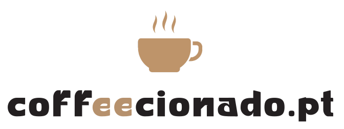

Reel dedicadoDedicated reel
O teu produto em uso real, numa receita ou rotina, com opinião honesta e legendas PT/EN.Your product in real use, inside a recipe or routine, with an honest take and PT/EN captions.


Media Kit 2026Criador de conteúdo · Porto, PortugalContent creator · Porto, Portugal
José Correia — café de especialidade, formação SCAspecialty coffee, SCA-trained
Café de especialidade explicado por quem o faz todos os dias. Conteúdo honesto, técnico e próximo, para uma audiência que quer beber melhor café. Specialty coffee, explained by someone who brews it every day. Honest, technical, down-to-earth content for an audience that wants to drink better coffee.
12 out – 11 nov 2026 · Instagram12 Oct – 11 Nov 2026 · Instagram
Visualizações de reelsReel views
13 reels · média de 77 mil por reel13 reels · 77K average per reel
Contas alcançadasAccounts reached
38× o número de seguidores38× the follower count
InteraçõesInteractions
gostos, partilhas, guardados, comentários e republicaçõeslikes, shares, saves, comments and reposts
Fonte: estatísticas do Instagram exportadas do Edits a 12/11/2026. Valores arredondados pelo Instagram.Source: Instagram insights exported from Edits on 12/11/2026. Figures rounded by Instagram.
Caso em destaque · reel de 7 nov 2026Featured case · reel from 7 Nov 2026
Em 20 minutos a estação está montada e o café pronto a servir. O reel chegou a 416 mil contas, 32 vezes mais do que os seguidores da página, e 6,4 mil pessoas enviaram-no a alguém.Twenty minutes to set up, then the coffee is ready to serve. The reel reached 416K accounts, 32 times the page's follower count, and 6.4K people sent it to someone.
visualizaçõesviews
Visualizações, na mesma escalaViews, on the same scale
Seguidores do Instagram · 12 out – 11 nov 2026Instagram followers · 12 Oct – 11 Nov 2026
GéneroGender
Faixa etária · escala 0–50%Age range · 0–50% scale
Porto, Matosinhos, Gaia e Gondomar somam 31% dos seguidores: ideal para marcas e eventos no Grande Porto.Porto, Matosinhos, Gaia and Gondomar add up to 31% of followers, a strong fit for brands and events in Greater Porto.
Tudo começou com a procura de uma alternativa às cápsulas: algo em que pudesse confiar, sem desperdício e com sabor verdadeiro. Essa curiosidade levou-me ao café de especialidade.It started with looking for an alternative to coffee capsules: something I could trust, with less waste and real flavour. That curiosity led me to specialty coffee.
Fiz formação certificada pela SCA (Specialty Coffee Association) na ABCoffee School, no Porto, e o hobby passou a fazer parte da minha vida.I trained with the SCA (Specialty Coffee Association) at ABCoffee School in Porto, and the hobby became part of my life.
Sou software engineer. É essa cabeça de engenheiro que trago para o conteúdo: testar, medir e explicar sem complicar.I'm a software engineer, and I bring that mindset to my content: test, measure, and explain without overcomplicating.
Café de especialidade sobre rodasSpecialty coffee on wheels
O coffee cart na mala do carro nasceu para levar café de especialidade diretamente às pessoas, na rua e sem filtros. Recusei orçamentos de 1500 € e construí a estrutura eu mesmo.The car-boot coffee cart takes specialty coffee straight to people, on the street. I turned down €1,500 quotes and built the setup myself.
Já esteve na Maratona do Porto, com a Senzu Coffee Roasters e a Transparente Vivo.It has already served at the Porto Marathon, with Senzu Coffee Roasters and Transparente Vivo.
O teu produto em uso real, numa receita ou rotina, com opinião honesta e legendas PT/EN.Your product in real use, inside a recipe or routine, with an honest take and PT/EN captions.
Testes com método: extração, sabor, construção e relação qualidade/preço.Methodical testing: extraction, taste, build quality and value for money.
O coffee cart serve café de especialidade no local, e o evento ganha conteúdo para as redes.The coffee cart serves specialty coffee on site, and your event gets content for social media.
Vídeo e fotografia com estética de café, prontos a usar nas tuas redes ou anúncios.Video and photography with a coffee-bar look, ready for your social channels or ads.
Pacotes e valores sob pedido.Packages and rates on request.
SCA Coffee Skills Program · ABCoffee School, Porto
ContactosContact
José Correia · Coffeecionado · Media Kit 2026